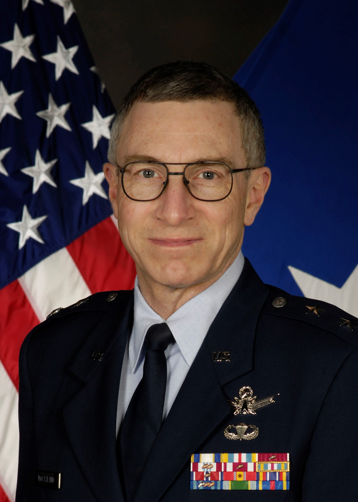
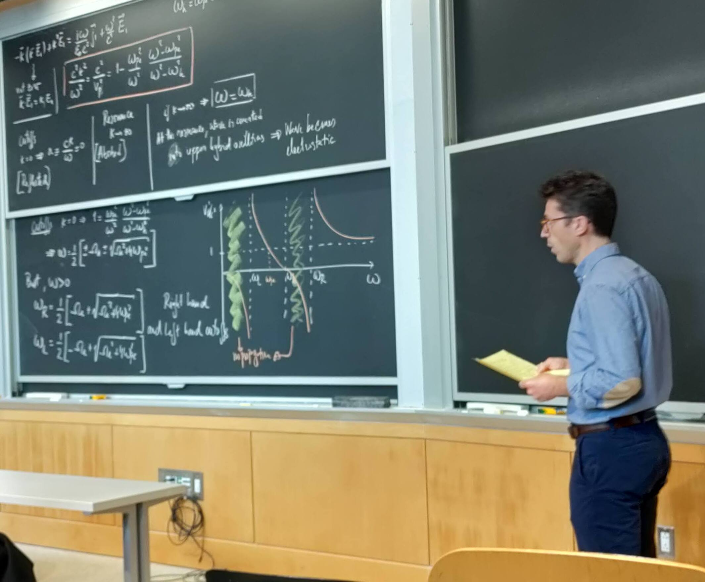
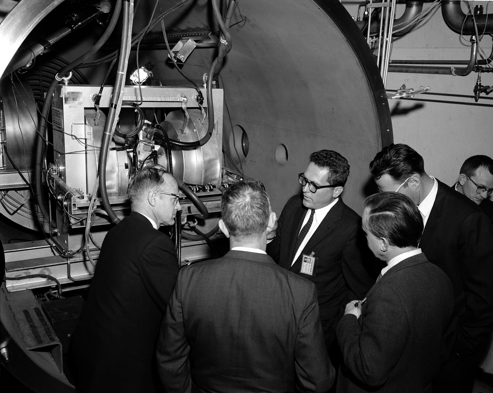

Was gerade überhaupt passiert
Seit Tagen schiebt sich ein Narrativ aus den Randzonen des Internets mitten in die großen Nachrichtenformate: Eine Liste von zehn, elf oder inzwischen sogar zwölf Wissenschaftlern, Technikern, Sicherheitsleuten und Forschern soll sich häufen — Menschen mit Verbindungen zu NASA JPL, Los Alamos, nuklearen Einrichtungen, hochsensibler Raumfahrtforschung oder in Einzelfällen sogar zum weiteren UAP/UFO-Milieu. Einige gelten als vermisst. Andere sind tot. Behörden prüfen mittlerweile, ob zwischen einzelnen Fällen irgendwelche Verbindungen bestehen.
Das allein ist schon stark genug. Doch online ist daraus längst etwas Größeres geworden: die Vermutung, dass hier Leute mit Zugang zu kritischem Wissen verschwinden — vielleicht wegen Spionage, vielleicht wegen geheimer Programme, vielleicht wegen etwas, das offiziell nie existieren sollte.


Warum gerade dieser Fall so explosiv ist
Normalerweise bleiben einzelne Todesfälle, Vermisstenmeldungen oder tragische persönliche Zusammenbrüche lokale oder fachinterne Nachrichten. Hier ist das anders. Warum? Weil mehrere dieser Namen in Bereichen auftauchen, die in der öffentlichen Fantasie seit Jahrzehnten mit Geheimhaltung, Militärforschung, Nuklearwissen und UFO-Legenden verbunden sind.
- NASA / JPL: Sofort denkt das Netz an Raumfahrt, versteckte Daten und schwarze Budgets.
- Los Alamos / Nuklearbereich: Hier schlägt die Alarmanlage Richtung Spionage, Sabotage und Staatsinteresse an.
- McCasland / Wright-Patt / Air Force Research Lab: Genau da beginnt der UAP-Sog, weil Wright-Patterson seit Jahrzehnten Teil des UFO-Mythos ist.
- Zeitliche Verdichtung: Mehrere Fälle in relativ kurzer Spanne wirken für viele eben nicht mehr wie Zufall.
Und so kippt die Wahrnehmung: Aus mehreren tragischen oder ungeklärten Einzelgeschichten wird ein Muster. Ob dieses Muster real ist oder nur im Kopf entsteht, ist die eigentliche Kernfrage dieser Akte.
Der Name, an dem sich alles aufhängt: William Neil McCasland
Wenn es in dieser Story einen Trigger-Punkt gibt, dann ist es der verschwundene pensionierte General William Neil McCasland. Er ist kein anonymer Aktenrandname, sondern eine Figur, die militärische Glaubwürdigkeit, technologische Nähe und UFO-Gerüchte auf fast unheimliche Weise zusammenzieht. Als früherer Kommandeur des Air Force Research Laboratory auf der Wright-Patterson Air Force Base ist er automatisch an einem Ort verankert, der in der UFO-Mythologie seit Roswell fast sakral aufgeladen ist.
Sein Verschwinden gab dem ganzen Narrativ erst die emotionale Wucht. Plötzlich war da nicht mehr nur die diffuse Rede von Forschern aus sensiblen Bereichen. Plötzlich war da ein prominenter Name, ein General, ein Mann mit Verbindungen in jene Schattenzone zwischen High-Tech, Militär und Spekulation. Selbst wenn seine Familie öffentlich gegen wilde ET-Schlussfolgerungen gewitzelt und relativiert hat, war der Funke bereits gesetzt.
Welche Fälle im Kern immer wieder genannt werden
Die genaue Liste schwankt je nach Medium. Manche sprechen von zehn Fällen, andere von elf oder zwölf. Genau das ist Teil des Problems: Die Story wächst schneller als ihre klare Ordnung. Trotzdem tauchen bestimmte Namen und Gruppen immer wieder auf:
- William Neil McCasland — vermisst, pensionierter Major General, Verbindung zum Air Force Research Laboratory, UAP-Spekulation im Umfeld.
- Monica Reza — vermisst, mit JPL-Bezug, verschwand bei einer Wanderung in Kalifornien.
- Steven Garcia — vermisst, Bezug zu nuklear-sensibler Infrastruktur.
- Melissa Casias und Anthony Chavez — Los-Alamos-nahe Namen, die in fast jeder Zusammenstellung auftauchen.
- Jason Thomas — zunächst vermisst, später tot aufgefunden.
- Nuno Loureiro — getötet, allerdings in einem Fall mit konkretem Täterkontext, was die Verschwörungserzählung eher schwächt als stärkt.
- Carl Grillmair, Frank Maiwald, Michael David Hicks — weitere Namen, die in Medienlisten erscheinen und den Eindruck einer Serie verstärken.
Man sieht schon: Das Problem ist nicht nur die Zahl der Fälle. Das Problem ist die Mischung. Vermisstenfälle, bestätigte Tötungsdelikte, Todesfälle mit persönlichen Hintergründen und unklare Kontexte landen plötzlich in einem gemeinsamen Topf. Und genau dort beginnt das narrative Chaos.
Die Namen der Akte
Damit diese Geschichte nicht nur abstrakt bleibt, gehört eine saubere Aktenübersicht dazu. Wo echte, belastbare Bilder vorliegen, sind sie eingebunden. Wo das Material dünn oder unsauber ist, bleibt die Person als dossierartige Karte sichtbar — ohne künstliches Auffüllen mit fragwürdigen Social-Screenshots.
Der Name, an dem die gesamte UAP-Aufladung hängt. Prominenter Ex-General, sensibles Umfeld, maximale Mystery-Resonanz.

Einer der sichtbarsten Namen der Liste. Sein Fall hat konkrete Kriminalkontexte, wird aber trotzdem in die größere Serie hineingezogen.
Für beide ist die verlässliche freie Bildlage schwach. Deshalb steht hier bewusst das institutionelle Los-Alamos-Bild als dokumentarischer Kontextanker.

Diese Namen werden ständig genannt, aber sauber freie Porträts sind schwer verfügbar. Das JPL-Bild bringt trotzdem visuelle Vielfalt, ohne unseriös zu werden.
Wird oft als besonders sensibler Fall dargestellt. Öffentliche, sauber nutzbare Porträts sind derzeit kaum belastbar auffindbar.
Beide werden in Sammelartikeln zur Serie geführt. Auch hier ist die Bildlage für freie, direkt nutzbare Porträts überraschend dünn.
Woher die UFO/UAP-Komponente eigentlich kommt
Sie kommt nicht aus allen Fällen. Sie kommt vor allem aus der Verknüpfung einzelner Namen mit bereits mythisch aufgeladenen Institutionen. Wright-Patterson, Air Force Research Laboratory, geheime Luftfahrtprogramme, Anti-Schwerkraft-Gerede, Roswell-Randnotizen, Whistleblower-Stimmungen — das alles klebt an bestimmten Figuren wie Magnetstaub.
Hinzu kommt, dass einige Medien genau diese Komponente massiv hervorheben, weil sie die Story emotional auflädt. Ein verschwundener Forscher aus einer Verwaltungseinheit klingt anders als ein vermisster General, der online sofort zum "UFO-General" gemacht wird. Das ist journalistisch brisant, aber auch gefährlich, weil so schnell der Eindruck entsteht, alle Fälle drehten sich um UAP-Geheimwissen. Das tun sie nach jetzigem Stand gerade nicht.
Was die nüchterne Gegenposition sagt
Seriösere Einordnungen machen auf etwas Wichtiges aufmerksam: Wenn man genug Menschen aus großen, sensiblen Institutionen betrachtet, dann wird man zwangsläufig über Jahre hinweg auch tragische Todesfälle, Vermisstenmeldungen, psychische Krisen, Gewaltverbrechen und ungeklärte Situationen finden. Mit anderen Worten: Das Muster kann real wirken, ohne dass es zwingend eine gemeinsame Ursache gibt.
Mehrere Familien und Fachleute haben sich bereits gegen die wildesten Schlussfolgerungen gestellt. In einigen Fällen gibt es plausible persönliche oder kriminelle Hintergründe. Und Institutionen wie NASA betonen bisher, dass sie keine Hinweise auf eine konkrete nationale Sicherheitsbedrohung aus ihren eigenen Zusammenhängen sehen. Auch CBS zitierte Experten, die keinen klaren Link zwischen den verschiedenen Fällen erkennen.
Und trotzdem bleibt es verdammt unheimlich
Genau hier wird die Akte stark. Denn selbst wenn sich am Ende herausstellt, dass kein zentrales Komplott dahintersteckt, bleibt ein harter Rest an Unbehagen. Zu viele Namen. Zu viele sensible Umfelder. Zu viele Schlagworte, die in Amerika sofort Black-Project-Reflexe auslösen. Dazu kommt die politische Dynamik: Wenn Ausschüsse, FBI, Sprecher des Weißen Hauses und große Sender dieselbe Geschichte anfassen, wirkt sie automatisch größer als ein gewöhnlicher Nachrichtencluster.
Und ganz ehrlich: Für die öffentliche Psyche ist es fast egal, ob die Fälle am Ende verbunden sind. Denn sie sind bereits im kulturellen Bewusstsein zusammengewachsen. Genau deshalb reden jetzt alle davon.
Die stärkste Sourkraut-Lesart
Die stärkste Version dieser Akte ist nicht die plumpe Behauptung, dass hier "zwölf UFO-Wissenschaftler eliminiert" wurden. Das wäre zu dünn und zu leicht angreifbar. Viel stärker ist diese Lesart: Eine reale Serie auffälliger Fälle trifft auf Institutionen, die seit Jahrzehnten mit Geheimprogrammen, Nuklearwissen und UAP-Legenden verknüpft sind — und genau dadurch entsteht ein explosiver Resonanzraum.
Vielleicht ist das Ergebnis am Ende banaler, als es gerade wirkt. Vielleicht aber zeigt sich auch, dass einige der Fälle doch eine tiefere Verbindung haben — eher in Richtung Spionage, Bedrohung sensibler Fachleute oder Sicherheitslücken als in Richtung fliegender Untertassen. Aber bis das klar ist, bleibt die Story ein perfekter Grenzfall zwischen investigativer News-Lage und modernem Staatsmysterium.
Sourkraut-Briefing Fazit
Akte 010 ist eine aktuelle Großakte, weil sie genau dort zündet, wo Dr. Sourkraut Filez am stärksten ist: an der Grenze zwischen harter Nachrichtenlage und maximal aufgeladenem Geheimdienst-/UFO-Flimmern. Der Faktenkern ist real: Es gibt mehrere Fälle, mediale Eskalation und offizielle Aufmerksamkeit. Das Rätsel ist ebenfalls real: Warum bündeln sich diese Namen so wirkungsvoll in der öffentlichen Wahrnehmung? Und der Rest — UAP-Programme, Black Sites, Schweigen, Spionage, Vertuschung — ist derzeit noch offene Projektionsfläche. Aber eine verdammt starke.